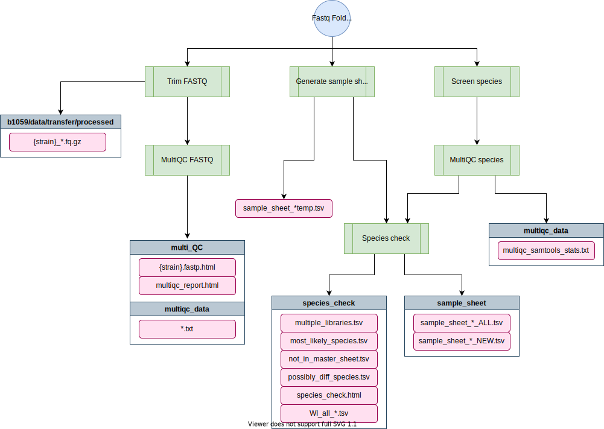

trim-fq-nf¶
The trim-fq-nf workflow performs FASTQ trimming to remove poor quality sequences and technical sequences such as adapters. It should be used with high-coverage genomic DNA. You should not use the trim-fq-nf workflow on low-coverage NIL or RIL data. Recent updates in 2021 also include running a species check on the FASTQ and generating a sample sheet of high-quality, species-confirmed samples for alignment.
Pipeline overview¶
____ .__ _____ _____
_/ |_ _______ |__| _____ _/ ____\ ______ ____ _/ ____\
\ __\\_ __ \| | / \ ______ \ __\ / ____/ ______ / \ \ __\
| | | | \/| || Y Y \ /_____/ | | < <_| | /_____/ | | \ | |
|__| |__| |__||__|_| / |__| \__ | |___| / |__|
\/ |__| \/
parameters description Set/Default
========== =========== ========================
--debug Use --debug to indicate debug mode ${params.debug}
--fastq_folder Name of the raw fastq folder ${params.fastq_folder}
--raw_path Path to raw fastq folder ${params.raw_path}
--processed_path Path to processed fastq folder (output) ${params.processed_path}
--genome_sheet File with fasta locations for species check ${params.genome_sheet}
--out Folder name to write results ${params.out}
--subsample_read_count How many reads to use for species check ${params.subsample_read_count}

- You have downloaded FASTQ Data to a subdirectory within a raw directory. For wild isolates this will be
/vast/eande106/data/transfer/raw/<folder_name> - FASTQs must end in a
.fq.gzextension for the pipeline to work. - You have modified FASTQ names if necessary to add strain names or other identifying information.
- You have installed software-requirements (see below for more info)
Software requirements¶
- Nextflow v23+ (see the dry guide on Nextflow here or the Nextflow documentation here). On Rockfish, you can access this version by loading the
nf23_envconda environment prior to running the pipeline command:
module load python/anaconda
source activate /data/eande106/software/conda_envs/nf23_env
Note
All FASTQs should end with a _R1_001.fastq.gz or a _R2_001.fastq.gz. You can rename FASTQs using the rename command:
for I in *.fq.gz; do
if [[ $I =~ ([/|a-z|A-Z|0-9|_|-]*/)([a-z|A-Z|0-9|_]+)(_1|_R1_001)\.(fq|fastq)\.gz ]]; then
mv ${I} ${BASH_REMATCH[1]}${BASH_REMATCH[2]}_R1_0001.fastq.gz
else if [[ $I =~ ([/|a-z|A-Z|0-9|_|-]*/)([a-z|A-Z|0-9|_]+)(_2|_R2_001)\.(fq|fastq)\.gz ]]; then
mv ${I} ${BASH_REMATCH[1]}${BASH_REMATCH[2]}_R2_0001.fastq.gz
fi
done
Relevant Docker Images¶
Note
Before 20220301, this pipeline was run using existing conda environments on QUEST. However, these have since been migrated to docker images to allow for better control and reproducibility across platforms. If you need to access the conda version, you can always run an old commit with nextflow run andersenlab/alignment-nf -r 20220216-Release
andersenlab/trim-fq(link): Docker image is created within this pipeline using GitHub actions. Whenever a change is made toenv/trim-fq.Dockerfileor.github/workflows/build_trimfq_docker.ymlGitHub actions will create a new docker image and push if successfulandersenlab/multiqc(link): Docker image is created within this pipeline using GitHub actions. Whenever a change is made toenv/multiqc.Dockerfileor.github/workflows/build_multiqc_docker.ymlGitHub actions will create a new docker image and push if successful
Make sure that you add the following code to your ~/.bash_profile. This line makes sure that any singularity images you download will go to a shared location on /vast/eande106 for other users to take advantage of (without them also having to download the same image).
# add singularity cache
export SINGULARITY_CACHEDIR='/vast/eande106/singularity/'
Note
If you need to work with the docker container, you will need to create an interactive session as singularity can't be run on Rockfish login nodes.
interact -n1 -pexpress
module load singularity
singularity shell [--bind local_dir:container_dir] /vast/eande106/<image_name>
Usage¶
Testing the pipeline on Rockfish¶
To see the running options and verify that paths are set correctly, you can use the --help parameter to see parameter settings.
nextflow run -latest andersenlab/trim-fq-nf --debug
This command uses a test dataset
Running the pipeline on Rockfish¶
Note: if you are having issues running Nextflow or need reminders, check out the Nextflow page.
nextflow run -latest andersenlab/trim-fq-nf --fastq_folder <name_of_folder>
Important
The pipeline expects the folder containing raw fastq files to be located at /vast/eande106/data/transfer/raw/. And all processed fastq files will be output to /vast/eande106/data/transfer/processed/
Profiles¶
-profile rockfish (Default)¶
If no profile is designated, the rockfish profile will run
-profile quest¶
This profile sets parameters for the Quest computing center
Parameters¶
--help¶
This will print out all required and optional parameters along with their current values and then exit.
--debug¶
You should use --debug for testing/debugging purposes. This will run the debug test set (located in the test_data/raw folder).
For example:
nextflow run andersenlab/trim-fq-nf --debug -resume
Using --debug will automatically set the fastq_folder to test_data/raw/20210406_test1
--trim false¶
This will cause the workflow to skip the fastq trimming
--species_check false¶
This will cause the workflow to skip the species check
--fastq_folder¶
This should be the name of the folder containing all fastq files located at /vast/eande106/data/transfer/raw/. As long as there are no overlapping file names (be sure to check this first), you can combine multiple pools sequenced at the same time into one larger folder at this step.
--raw_path (optional)¶
The path to the fastq_folder if not default (/vast/eande106/data/transfer/raw/)
--processed_path (optional)¶
The path to output folder if not default (/vast/eande106/data/transfer/processed/)
--genome_sheet (optional)¶
Path to a tsv file listing project IDs for species. Default is located in trim-fq-nf/bin/genome_sheet.tsv
--out (optional)¶
Name of output folder with results. Default is "processFQ-{fastq_folder}"
--subsample_read_count (optional)¶
How many reads to use for species check. Default = 10,000
Output¶
├── /vast/eande106/data/transfer/processed/
│ └── {strain}_{library}_{read}.fq.gz
- - - - - - - - - - - - - - - - - - - - - - - - - - - -
├── multi_QC
│ ├── multiqc_data
│ │ ├── *.txt
│ │ └── multiqc_data.json
│ ├── multiqc_report.html
│ └── {strain}_{library}_{read}_fastp.html
├── multiqc_data
│ └── multiqc_samtools_stats.txt
├── sample_sheet
│ ├── sample_sheet_{species}_{date}_ALL.tsv
│ └── sample_sheet_{species}_{date}_NEW.tsv
├── species_check
│ ├── species_check_{fastq_folder}.html
│ ├── {library}_multiple_librarires.tsv
│ ├── {library}_strains_most_likely_species.tsv
│ ├── {library}_strains_not_in_master_sheet.tsv
│ ├── {library}_strains_possibly_diff_species.tsv
│ └── WI_all_{date}.tsv
├── sample_sheet_{fastq_folder}_all_temp.tsv
└── log.txt
The resulting trimmed FASTQs will be output in the /vast/eande106/data/transfer/processed directory. The rest of the output files and reports will be generated in a new folder in the directory in which you ran the nextflow pipeline, labeled by processFQ-{fastq_folder}.
MultiQC
-
multi_QC/{strain}_{library}_fastp.html- fastp html report detailing trimming and quality -
multi_QC/multiqc_report.html- aggregate multi QC report for all strains pre and post trimming -
multi_QC/multiqc_data/*.txt or .json- files used to make previous reports
Species check
If a species check is run, the multiqc_data/multiqc_samtools_stats.txt will contain the results of reads mapped to each species. Furthermore, several reports and sample sheets will be generated:
-
species_check/species_check_{date}_{library}.htmlis an HTML report showing how many strains have issues (not in master sheet, possibly different species, etc.) -
species_check/{library}_multiple_libraries.tsv- strains sequenced in multiple libraries -
species_check/{library}_strains_most_likely_species.tsv- list of all strains in library labeled by (1) the species in record and (2) most likely species by sequencing -
species_check/{library}_strains_not_in_master.tsv- list of strains not found in Robyn's wild isolate master sheets for CE, CB, or CT -
species_check/{library}_strains_possibly_diff_species.tsv- list of strains whose species in record does not match the likely species by sequencing -
species_check/WI_all_{date}.tsv- copy of all strains (CE, CB, and CT) and species designation in record -
sample_sheet_{date}_{library}_all_temp.tsv- temporary sample sheet with all strains for all species combined. DO NOT USE THIS FOR ALIGNMENT.
Sample sheets
If a species check is run, the species_check/sample_sheet folder will also contain 6 sample sheets to be used for alignment:
-
sample_sheet/sample_sheet_{species}_{date}_ALL.tsv- sample sheet foralignment-nfusing ALL strains of a particular species (i.e. c_elegans). This is useful for species we have not performed any alignments for or when we update the reference genome and need to re-align all strains. -
sample_sheet/sample_sheet_{species}_{date}_NEW.tsv- sample sheet foralignment-nfusing all fastq from any library for ONLY strains sequenced in this particular library of a particular species (i.e. c_elegans, RET63). This is useful when the reference genome does not change and there is no need to re-align thousands of strains to save on computational power.
Note
The "new" sample sheet will still contain old fastq sequenced in a previous pool (i.e. RET55) if that strain was re-sequenced in the current pool (i.e. RET63). After running alignment-nf, this will create a new BAM file incorporating all fastq for that strain.
Data storage¶
Backup¶
Once you have completed the trim-fq-nf pipeline you should backup the raw FASTQs. More information on this is available in the backup
Poor quality data¶
If you observe poor quality sequence data you should notify Robyn through the appropriate channels and then remove the data from further analysis.
Cleanup¶
If you have triple-checked everything and are satisfied with the results, the original raw sequence data can be deleted. The processed sequence data (FASTQ files) should be moved to their appropriate location, split by species (/vast/eande106/data/{species}/WI/fastq/dna/). The following line can be used to move processed fastq prior to running alignment-nf:
# change directories into the folder containing the processed fastq files
cd /vast/eande106/data/transfer/processed/20210510_RET63/
# move files one species at a time (might be a more efficient line of code for this, but it works...)
# !!!! make sure to change the file name !!!!!
# file name ~ - ~ CHANGE THIS ~ - ~
file='/vast/eande106/Katie/trim-fq-nf/20210510_RET63/species_check/sample_sheet/sample_sheet_c_tropicalis_20201222a_NEW.tsv'
# species
sp="c_`echo $file | xargs -n1 basename | awk -F[__] '{print $4}'`"
# get list of files to move from file
awk NR\>1 $file > temp.tsv
cat temp.tsv | awk '{print $4}' > files_to_move.txt
cat temp.tsv | awk '{print $5}' >> files_to_move.txt
# move files
cat files_to_move.txt | while read line
do
mv $line /vast/eande106/data/$sp/WI/fastq/dna/
done
# remove temp file
rm files_to_move.txt
rm temp.tsv
Note
The sample sheets ONLY contain strains that species in record matches most likely species by sequencing. If, after moving all the FASTQ for each species to their proper folder, you have FASTQ remaining, these are likely to be found in strains_possibly_diff_species.tsv. You should notify Robyn and Erik about these strains through the appropriate channels and delete the FASTQ or move to another temporary location until it can be re-sequenced.